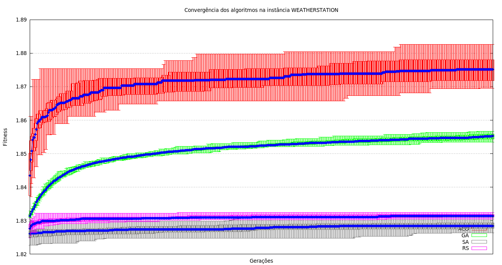
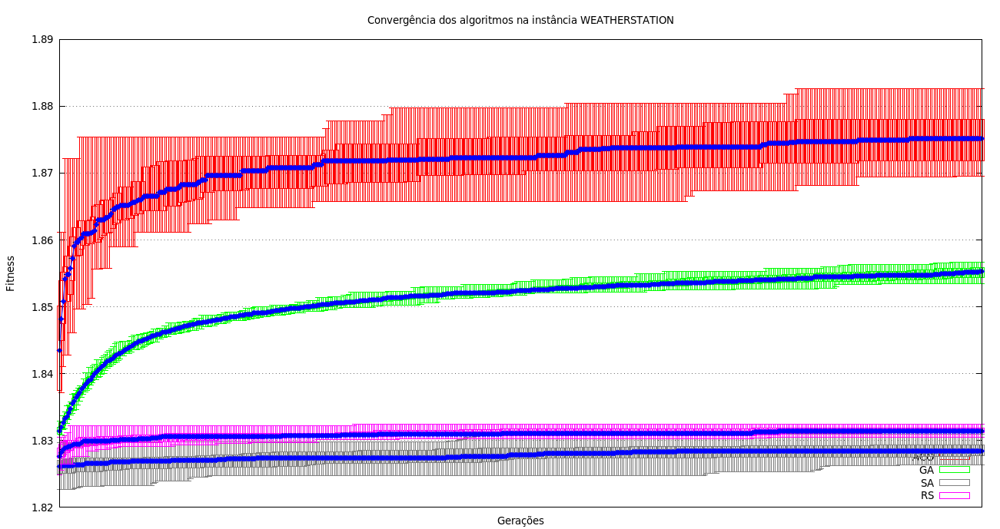
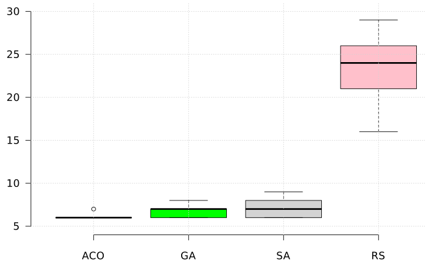

Material de Apoio Para o Artigo
Utilizando Otimização por Colônia de Formigas na Seleção de Produtos para o Teste de Mutação do Diagrama de Características
Thiago Nascimento Ferreira e Silvia Regina Vergilio
Departamento de Informática - Universidade Federal do Paraná (UFPR)
Caixa Postal 19.081 - 81.531-980 - Curitiba - Paraná - Brasil
Abstract: The variability mutation testing of the featue model has been found promissing results, due to its capability to reveal faults. To derive a set of test cases, that is, products, with a high mutation score, associated to a minimal cost, is a hard task, which has been solved by search based approaches. However, existing approaches use evolutionary algorithms. This work proposes an approach based on Ant Colony Optimization (ACO). A mathematical formulation is introduced, considering the mutation score and the dissimilarity between generated products, in order to reduce the number of redundant products, that is, products that kill the same set of mutants. Results comparing the approach with Genetic Algorithm, Simulated Annealing and Random Search show that ACO can find the best solutions and with the best convergence, even in feature models with higher number of products.
Resumo: O teste de mutação de variabilidades do diagrama de características tem se mostrado bastante promissor, devido a sua capacidade em revelar defeitos. Derivar um conjunto de casos de teste, ou seja, de produtos, com alto escore de mutação associado a um custo mínimo é uma tarefa complexa para a qual soluções baseadas em busca têm sido propostas. Entretanto, as soluções existentes utilizam algoritmos evolutivos. Neste trabalho uma solução baseada em Otimização por Colônia de Formiga (ACO) é proposta. Uma modelagem é introduzida, que considera o escore de mutação e a dissimilaridade dos produtos gerados, a fim de reduzir o número de produtos redundantes, ou seja, que matam os mesmos mutantes. Resultados obtidos, comparando a abordagem com o Algoritmo Genético, Têmpera Simulada e Busca Aleatória, mostram que o ACO consegue encontrar as melhores soluções, além gerar a melhor convergência mesmo em diagramas com elevada quantidade de produtos.
Instâncias
A tabela a seguir contém informações sobre as instâncias utilizadas no artigo.
| Nome | Quantidade de Características | Relação de Inclusão | Relação de Exclusão | Quantidade de Produtos | Quantidade de Mutantes | Dissimilaridade Média |
|---|---|---|---|---|---|---|
| JAMES | 14 | 1 | 1 | 68 | 106 | 79.2639% |
| CAS | 21 | 2 | 1 | 450 | 227 | 78.2105% |
| WHEATHERSTATION | 22 | 0 | 0 | 504 | 357 | 82.6721% |
| ESHOP | 22 | 1 | 1 | 1152 | 394 | 76.7553% |
Clique no nome das instâncias para baixá-las.
Para visualizar os features models utilizado nesse artigo, você deve acessar:
http://www.inf.ufpr.br/tnferreira/topics/examples-of-feature-models-used-in-literature.html
Configurações
A tabela a seguir apresenta, para cada algoritmo, todos os parâmetros que foram combinados nesta fase de configuração dos experimentos. Cada combinação de parâmetro foi executada 30 vezes.
| Algoritmo | Parâmetros | Possíveis Valores |
|---|---|---|
| Ant Colony Optimization | Número de Formigas | 20; 50 |
| Número de Avaliações | 1000; 5000; 10000; 50000 | |
| α | 1 | |
| β | 1; 2 | |
| q0 | 0.9 | |
| ρ | 0.1 | |
| φ | 0.1 | |
| Genetic Algorithm | Tamanho da População | 50; 100 |
| Número de Avaliações | 1000; 5000; 10000; 50000 | |
| Probabilidade de Mutação | 0.01; 0.005 | |
| Probabilidade de Crossover | 0.8; 0.9 | |
| Operadores de Cruzamento | SinglePointCrossover; UniformCrossover | |
| Operadores de Mutação | BitFlipMutation | |
| Operadores de Seleção | BinaryTournament; RouletteWheel | |
| Simulated Annealing | Número de Avaliações | 1000; 5000; 10000; 50000 |
| Temperatura Inicial | 100; 1000 | |
| Fator de Congelamento | 0.9995; 0.995; 0.95 | |
| Random Search | Número de Avaliações | 1000; 5000; 10000; 50000 |
Combinando todos os parâmetros, no final foram executados 688 experimentos onde:
- Ant Colony Optimization: 16 experimentos em cada instância. Total de 64 experimentos;
- Genetic Algorithm: 128 experimentos em cada instância. Total de 512 experimentos;
- Simulated Annealing: 24 experimentos em cada instância. Total de 96 experimentos;
- Random Search: 4 experimentos em cada instância. Total de 16 de experimentos.
Depois de executar todos os experimentos, várias configurações conseguiram encontrar as os melhores resultados mas sem diferença estatística calculada através do teste Kruskal Wallis com 95% de confiança. Com isso, as configurações utilizadas em cada algoritmo foi:
- Ant Colony Optimization:
- Número de Formigas: 50
- Máximo de Avaliações: 50000
- α: 1
- β: 1
- q0: 0.9
- ρ: 0.1
- φ: 0.1
- Genetic Algorithm
- Tamanho da População: 100
- Máximo de Avaliações: 50000
- Probabilidade de Mutação; 0.05
- Probabilidade de Crossover: 0.9
- Operador de Mutação: Bit Flip
- Operador de Cruzamento: Uniforme
- Operador de Seleção: Torneio Binário
- Simulated Annealing
- Temperatura Inicial: 1000
- Máximo de Avaliações: 50000
- Fator de Congelamento; 0.995
- Random Search
- Máximo de Avaliações: 50000
Questão de Pesquisa 1
A tabela a seguir apresenta a média, desvio padrão, valor máximo e valor mínimo do fitness depois de 30 execuções. Os valores em negrito representam os melhores valores para cada instância com diferença estatística. Tempo exibido é em milisegundos.
| Instance | Algorithm | Métrica | Média |
Desvio Padrão |
Maior Valor |
Menor Valor |
|---|---|---|---|---|---|---|
| JAMES | ACO | fitness | 1.89482 | 0.00311 | 1.90349 | 1.89281 |
| tempo | 18069.06667 | 2074.38335 | 22560.00000 | 14939.00000 | ||
| GA | fitness | 1.89195 | 0.00572 | 1.90348 | 1.88152 | |
| tempo | 925.73333 | 195.27133 | 1259.00000 | 654.00000 | ||
| SA | fitness | 1.88274 | 0.01060 | 1.90348 | 1.86652 | |
| tempo | 1229.03333 | 239.22828 | 1778.00000 | 864.00000 | ||
| RS | fitness | 1.82096 | 0.00240 | 1.82731 | 1.81743 | |
| tempo | 4047.23333 | 572.42344 | 5077.00000 | 3254.00000 | ||
| CAS | ACO | fitness | 1.90266 | 0.00196 | 1.90750 | 1.89791 |
| tempo | 6671.76667 | 738.37061 | 8423.00000 | 6006.00000 | ||
| GA | fitness | 1.87675 | 0.00293 | 1.88300 | 1.87093 | |
| tempo | 16197.63333 | 701.50039 | 17708.00000 | 14717.00000 | ||
| SA | fitness | 1.89553 | 0.00379 | 1.90221 | 1.88808 | |
| tempo | 16314.43333 | 1227.57897 | 19317.00000 | 14008.00000 | ||
| RS | fitness | 1.79710 | 0.00088 | 1.79896 | 1.79571 | |
| tempo | 134248.76667 | 20327.29173 | 161834.00000 | 105623.00000 | ||
| ESHOP | ACO | fitness | 1.86929 | 0.00260 | 1.87458 | 1.86285 |
| tempo | 28907.90000 | 1929.82714 | 37104.00000 | 26060.00000 | ||
| GA | fitness | 1.82181 | 0.00078 | 1.82341 | 1.82032 | |
| tempo | 94379.53333 | 9977.02471 | 112266.00000 | 76948.00000 | ||
| SA | fitness | 1.86345 | 0.00293 | 1.87096 | 1.85803 | |
| tempo | 87676.10000 | 4425.35907 | 95509.00000 | 78956.00000 | ||
| RS | fitness | 1.77814 | 0.00072 | 1.77955 | 1.77695 | |
| tempo | 625700.50000 | 41999.84062 | 745701.00000 | 535420.00000 | ||
| WEATHERSTATION | ACO | fitness | 1.87761 | 0.00360 | 1.88505 | 1.86961 |
| tempo | 7883.63333 | 738.65827 | 10531.00000 | 7496.00000 | ||
| GA | fitness | 1.85491 | 0.00063 | 1.85617 | 1.85357 | |
| tempo | 19858.56667 | 613.30797 | 21513.00000 | 18572.00000 | ||
| SA | fitness | 1.87591 | 0.00248 | 1.88100 | 1.87074 | |
| tempo | 16060.56667 | 1141.49677 | 17807.00000 | 13738.00000 | ||
| RS | fitness | 1.83324 | 0.00037 | 1.83411 | 1.83262 | |
| tempo | 282503.3333 | 15366.59817 | 306379 | 253902 |
Os resultados encontrados do ACO foram comparados com os resultados encontrados pelas outras metaheurísticas a fim de verificar se existe alguma diferença estatística entre as amostras. Para isso, o teste de Kruskall Wallis foi aplicado com 95% de confiança e as tabelas a seguir apresentam o resultado do teste
| ACO | GA | SA | RS | |
|---|---|---|---|---|
| ACO | --- | True | True | True |
| GA | True | --- | True | True |
| SA | True | True | --- | True |
| RS | True | True | True | --- |
| ACO | GA | SA | RS | |
|---|---|---|---|---|
| ACO | --- | True | True | True |
| GA | True | --- | True | True |
| SA | True | True | --- | True |
| RS | True | True | True | --- |
| ACO | GA | SA | RS | |
|---|---|---|---|---|
| ACO | --- | True | True | True |
| GA | True | --- | True | True |
| SA | True | True | --- | True |
| RS | True | True | True | --- |
| ACO | GA | SA | RS | |
|---|---|---|---|---|
| ACO | --- | True | True | True |
| GA | True | --- | True | True |
| SA | True | True | --- | True |
| RS | True | True | True | --- |
A tabela a seguir apresenta o teste estatístico de Vargha and Delaney’s Â12 para o fitness encontrado em 30 execuções.
| JAMES | CAS | ESHOP | WEATHERSTATION |
|
|---|---|---|---|---|
| ACO vs GA | 0.7288889 | 1 | 1 | 1 |
| ACO vs SA | 0.8044444 | 0.9611111 | 0.94 | 0.6533333 |
| ACO vs RS | 1 | 1 | 1 | 1 |
| GA vs SA | 0.7805556 | 0 | 0 | 0 |
| GA vs RS | 1 | 1 | 1 | 1 |
| SA vs RS | 1 | 1 | 1 | 1 |
Questão de Pesquisa 2
As figuras a seguir mostram a melhor solução em cada avaliação durante as 1000 primeiras avaliações do algoritmo. Os resultados foram coletados durante 30 execuções e estão representados em forma de gráfico de caixa.


 

Questão de Pesquisa 3
A tabela a seguir apresenta a média e desvio padrão da quantidade de produtos selecionados por cada algoritmo em cada instância em 30 execuções utilizando a melhor configuração. A coluna "Diferença" compara o ACO com a melhor média dos outros algoritmos.
| Instância | ACO | GA | SA | RS | Diferença |
|---|---|---|---|---|---|
| JAMES | 6.03 ± 0.18 | 6.86 ± 0.86 | 7.06 ± 0.90 | 23.36 ± 3.15 | -12.10% |
| CAS | 11.16 ± 0.79 | 26.4 ± 2.96 | 13.83 ± 1.53 | 213.06 ± 11.62 | -19.31% |
| ESHOP | 11.33 ± 1.24 | 270.70 ± 15.69 | 14.80 ± 1.54 | 573.73 ± 16.86 | -23.45% |
| WEATHERSTATION | 11.23 ± 0.72 | 57.86 ± 4.78 | 17.20 ± 1.56 | 246.6 ± 9.59 | -34.71% |
| Média | -22.39% |
Os número de produtos selecionados pelo ACO foi comparado com o número de produtos selecionados pelos outros algoritmos para verificar se existe alguma diferença estatística. As tabelas a seguir apresentam o resultado do teste de Kruskall Wallis aplicado com 95% de confiança em cada instância.
| ACO | GA | SA | RS | |
|---|---|---|---|---|
| ACO | --- | True | True | True |
| GA | True | --- | False | True |
| SA | True | False | --- | True |
| RS | True | True | True | --- |
| ACO | GA | SA | RS | |
|---|---|---|---|---|
| ACO | --- | True | True | True |
| GA | True | --- | True | True |
| SA | True | True | --- | True |
| RS | True | True | True | --- |
| ACO | GA | SA | RS | |
|---|---|---|---|---|
| ACO | --- | True | True | True |
| GA | True | --- | True | True |
| SA | True | True | --- | True |
| RS | True | True | True | --- |
| ACO | GA | SA | RS | |
|---|---|---|---|---|
| ACO | --- | True | True | True |
| GA | True | --- | True | True |
| SA | True | True | --- | True |
| RS | True | True | True | --- |
A tabela a seguir apresenta o teste estatístico de Vargha and Delaney’s Â12 para o número de produtos selecionados.
| JAMES | CAS | ESHOP | WEATHERSTATION |
|
|---|---|---|---|---|
| ACO vs GA | 0.7716667 | 1 | 1 | 1 |
| ACO vs SA | 0.8227778 | 0.93444444 | 0.98055556 | 1 |
| ACO vs RS | 1 | 1 | 1 | 1 |
| GA vs SA | 0.5588889 | 0 | 0 | 0 |
| GA vs RS | 1 | 1 | 1 | 1 |
| SA vs RS | 1 | 1 | 1 | 1 |
As imagens a seguir apresentam o gráfico de caixa para 30 execuções do algoritmo. O gráfico mostra a quantidade de produtos selecionados em cada instância.
Instância JAMES
Instância CAS

Instância ESHOP

Instância WEATHERSTATION